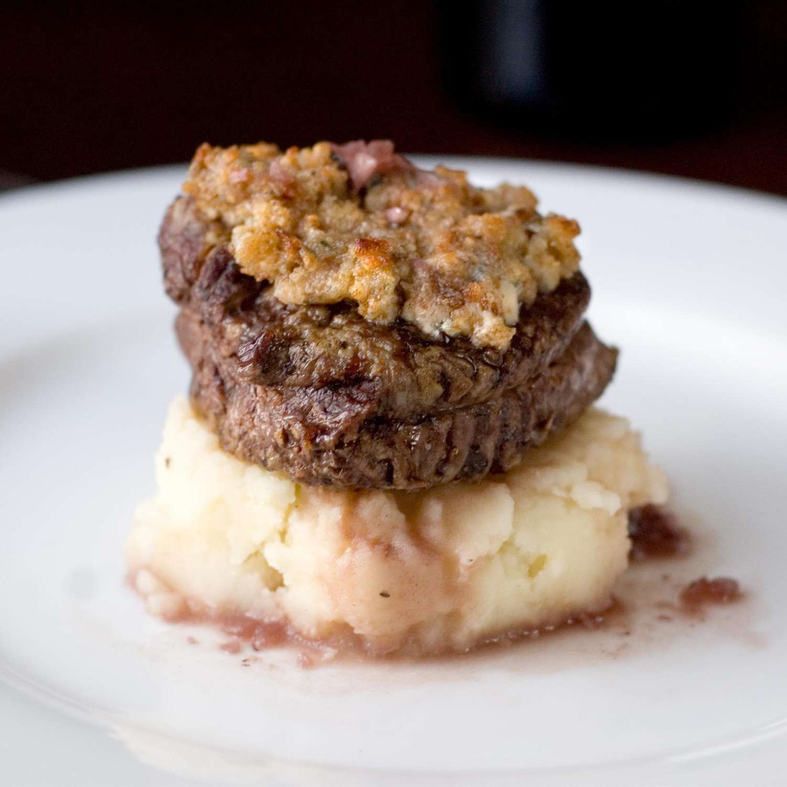

Home
Blue Cheese Crusted Filet Mignon with Port Wine Sauce

Description
Blue Cheese Crusted Filet Mignon with Port Wine Sauce is an indulgent and flavorful dish that combines the rich, tender
texture of a perfectly cooked filet mignon with the sharp, creamy taste of blue cheese. The filet is often seared to a
beautiful crust on the outside while remaining tender and juicy on the inside. It's topped with a flavorful blue cheese
crust, which melts into the steak, adding a rich, tangy depth.
The port wine sauce is a luxurious accompaniment, made by simmering port wine with shallots, herbs, and a touch of cream
or butter. This sauce is reduced to a silky, slightly sweet, and savory consistency that enhances the natural flavors of
the beef, while balancing the richness of the blue cheese. Together, the blue cheese crust and port wine sauce elevate this
dish into a decadent dining experience. It’s usually served with sides like roasted vegetables, mashed potatoes, or a crisp salad.
Ingredients:
- 1 tablespoon butter
- ½ cup minced white onion
- 3 cloves garlic,minced
- 1 tablespoon chopped fresh thyme
- ¾ cup low-sodium beef broth
- ½ cup port wine
- 1 tablespoon vegetable oil
- 4 filet mignon steaks (1 1/2 inch thick)
- ¾ cup crumbled blue cheese
- ¼ cup panko bread crumbs
Steps:
-
Melt butter in a skillet over medium heat. Add the onion, garlic and thyme. Cook, stirring constantly, until onion is tender.
Stir in the beef broth, scraping any onion bits from the bottom of the pan, then stir in the port wine. Bring to a boil, and
cook until the mixture has reduced to about 1/2 cup. Set aside.
This may also be made ahead of time, and reheated.
-
Preheat the oven to 350 degrees F (175 degrees C). Heat oil in a cast-iron or other oven-safe skillet over high heat. Sear
steaks quickly on both sides until brown, then place the whole pan into the oven.
-
Roast steaks in the oven for about 15 minutes for medium rare - with an internal temperature of 145 degrees F (63 degrees C).
You may adjust this time to allow the steaks to finish just below your desired degree of doneness if medium is not what you prefer.
Remove from the oven, and place on a baking sheet. Stir together the panko crumbs and blue cheese. Top each steak with a layer of this
mixture.
-
Preheat the oven's broiler. Place steaks under the preheated broiler until the cheese topping is browned and bubbly. 3 to 4 minutes.
Remove from the oven, and let stand for at least 15 minutes before serving. Serve with warm port wine sauce.